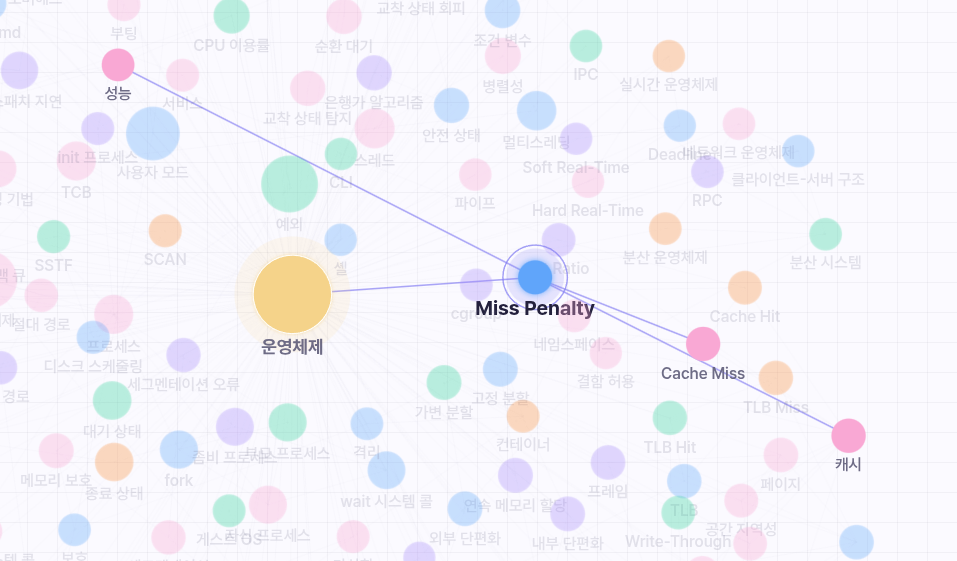

PDF 업로드 및 분석
CS 학습 자료 PDF를 업로드하면 본문에서 핵심 개념을 추출하고 관계를 분석해 프로젝트 지식 그래프를 생성합니다.
- CS 학습 자료 PDF 업로드
- PDF 본문 기반 핵심 개념 추출
- 개념 간 관계 분석 및 그래프 생성
- 프로젝트별 PDF 분석 상태 관리
PDF 자료부터 학습 기록까지, 학습 흐름 전체를 연결합니다.
CS 학습 자료 PDF를 업로드하면 본문에서 핵심 개념을 추출하고 관계를 분석해 프로젝트 지식 그래프를 생성합니다.
지식 그래프의 핵심 개념을 바탕으로 진단 문항을 만들고, 사용자의 초기 이해도와 부족한 개념을 확인합니다.
업로드한 PDF와 지식 그래프를 기반으로 답변을 생성하고, 진단 결과와 학습 상태를 반영해 설명합니다.
PDF에서 추출한 개념과 관계를 시각화하고, 개념별 학습 상태 변화를 프로젝트별로 관리합니다.

최근 AI 답변에서 반복적으로 등장한 개념을 기반으로 미니퀴즈를 제안하고 이해 상태를 업데이트합니다.
프로젝트별 채팅방, 진단 결과, 미니퀴즈 기록, 메모장을 저장해 학습 데이터를 분리 관리합니다.
업로드부터 진단, 그래프, 퀴즈까지 이어지는 학습 흐름을 확인하세요.
직접 사용해보기 →